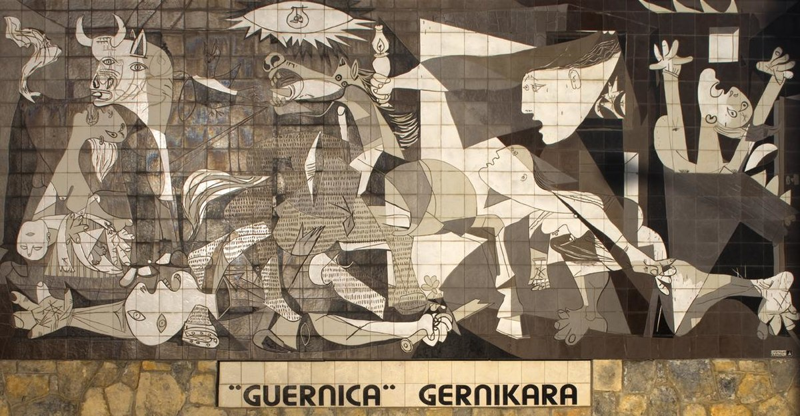
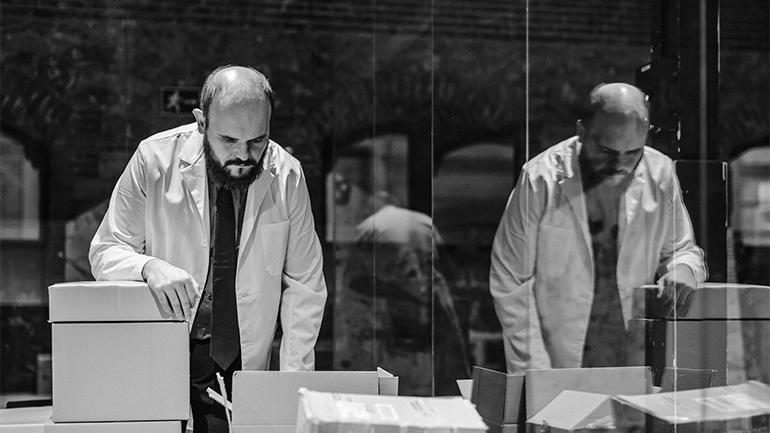
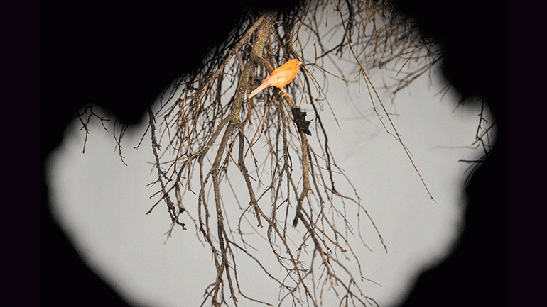

Repensar Guernica
Historia y conflicto del siglo XX
Documentos inéditos, imágenes en gigapíxel, comparación de técnicas fotográficas, cronología interactiva... en esta nueva web sobre Guernica de Pablo Picasso.
Niño de Elche
Auto Sacramental Invisible. Una representación sonora a partir de Val del Omar
Esta obra, prácticamente desconocida —solo llegó a presentarse, en junio de 1952, de manera parcial y tentativa—, puede entenderse como una suerte de «eslabón perdido» dentro de la evolución estética valdelomariana. Auto Sacramental Invisible ayuda a explicar el salto del joven cineasta y fotógrafo, cercano al realismo documental.
Petrit Halilaj
A un cuervo y los huracanes que, desde lugares desconocidos, traen de vuelta olores de humanos enamorados
El trabajo de Petrit Halilaj (1986, Kostërc, Skenderaj-Kosovo) está estrechamente vinculado con su biografía, la historia reciente de su país y las consecuencias de las tensiones políticas y culturales en la región.En sus obras recurre a los recuerdos de su niñez con el objetivo de diseccionar nociones como hogar, nación e identidad cultural.